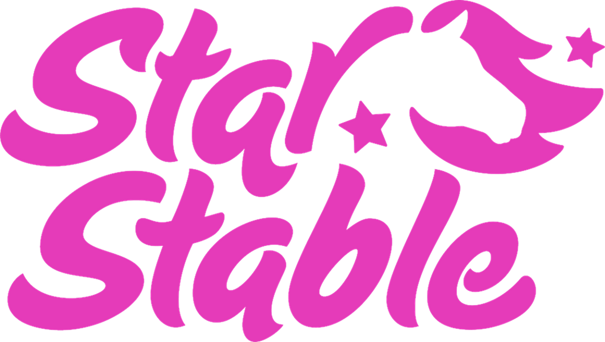

Star Stable Entertainment, the creators of the worldwide successful multiplayer online game Star Stable, and Ferly, the entertainment company founded by former Rovio executives, among them earlier CEO and Executive Producer of The Angry Birds Movie Mikael Hed, are teaming up to develop and produce an animated series for digital distribution. The 10 x 5 minutes series is targeted at the brand’s core audience of tweens and teens but will offer action and suspense for a wider halo audience. The series will be released on YouTube and other digital platforms in fall 2020.
The series will follow the adventures of a young girl arriving at the magical island of Jorvik, where the Star Stable online game takes place. On the island, she discovers a magical horse to which she forms a bond. Together, horse and girl discover the real danger hidden beneath the beautiful island’s seemingly calm surroundings.
Star Stable and Ferly are also expanding the story world to a full-length TV series, which will be showcased for the first time at MIPJunior in Cannes by Ferly.
Both series will be written by Emmy-award winning writer Alice Prodanou, and produced at Ferly’s studios in Vancouver, BC and Helsinki, Finland.
“Our mission is to build a platform for girls in tech and entertainment. Animation is a powerful way to strengthen our relationships with existing and new audiences around the world. Ferlys skilled team and experience from storytelling makes the perfect partner for this venture”, says Taina Malén, CBDO, Star Stable, Star Stable Entertainment.
Ferly is also the chosen content creation partner for Star Stable Entertainment’s publishing program and has sold Star Stable Entertainment’s novel trilogy to several markets already.
“We are thrilled to be expanding our already existing multi-platform collaboration with Star Stable Entertainment to share stories in animation form. The values and the deep lore of the Star Stable Online universe give a fantastic platform to create stories about!” says Laura Nevanlinna, CEO of Ferly.
For further information, please contact.
SSE:
Jane Billet, PR Manager +46 70 681 55 08
Taina Malén, CBDO, +46 70 358 29 43
Ferly:
Tuomas Sorjamaa, PR, +358 50 351 08 72
Laura Nevanlinna, CEO, +358 40 172 3554